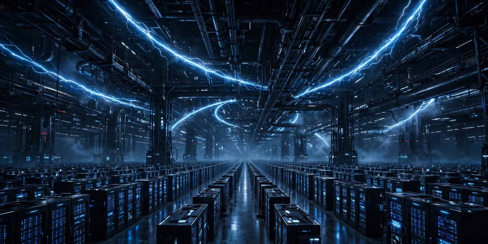

Ovia Inc — Articles
When the AI Factory Is Measured in Gigawatts

The announcement
On October 27, 2026, NVIDIA and Oracle announced plans to expand Oracle Cloud Infrastructure (OCI) Superclusters with NVIDIA Vera Rubin NVL72 systems to multi-gigawatt scale, supporting growing customer demand for AI training, inference and agentic applications. The same announcement brings the NVIDIA Vera CPU to Oracle Cloud Infrastructure. One week earlier, Google Cloud and NVIDIA announced general availability of NVIDIA Vera Rubin infrastructure, with expansion to Europe planned — the same platform is arriving on multiple clouds at once.
A city's worth of power
The word "gigawatt" does quiet work in that headline. A gigawatt is roughly the demand of a mid-sized city. Planning AI capacity at that scale turns a data centre project into an energy project: land near substations, cooling at industrial scale, and grid agreements signed years ahead. NVIDIA's DSX POD, presented at GTC Berlin, attacks the other end of the same problem — complete Vera Rubin AI factories assembled and tested inside containers by 17 partners, cutting on-site deployment from as much as six months to as little as 14 days once a site is ready, with deliveries expected from early 2027. The pattern is consistent: the industry is industrialising the factory itself.
Inference is the main event
Training built the first AI factories. Inference fills them. An agent that answers questions, checks systems and acts on instructions all day consumes serving capacity continuously, not in bursts. Announcements that size infrastructure for "training, inference and agentic applications" in one breath mark the shift: fleets are now designed for models that work, not only for models that learn.
Operations is the discipline
At gigawatt scale, small inefficiencies become large bills and small outages become public events. Utilisation, scheduling, interconnect health and failure drills decide whether the capacity on paper becomes answers in production. That is why operations exists as a certified discipline — NVIDIA-Certified Professional: AI Operations is part of the team record at Ovia — and why context engineering and agent design sit on top of it. An agent is only as reliable as the fleet underneath it, and a fleet is only as good as the discipline running it.
What to watch
Three signals will show whether the gigawatt era arrives on schedule: whether the multi-gigawatt OCI expansions move from announcement to energised sites; whether containerised AI factories ship from early 2027 as planned; and whether inference economics — cost per answered question, per completed task — keep falling as Vera Rubin capacity lands. The direction is set. The craft now is execution.